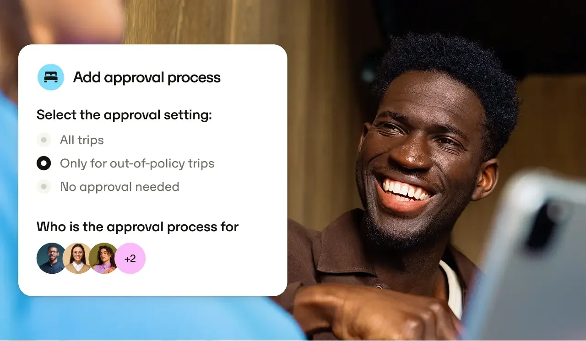
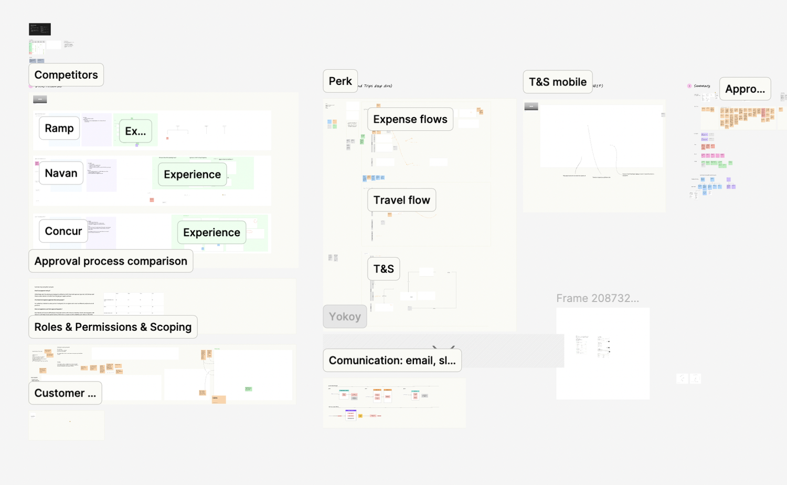
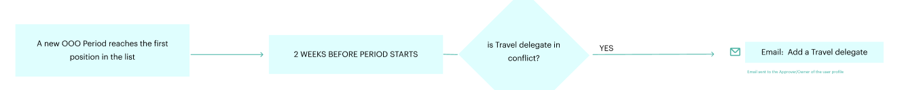
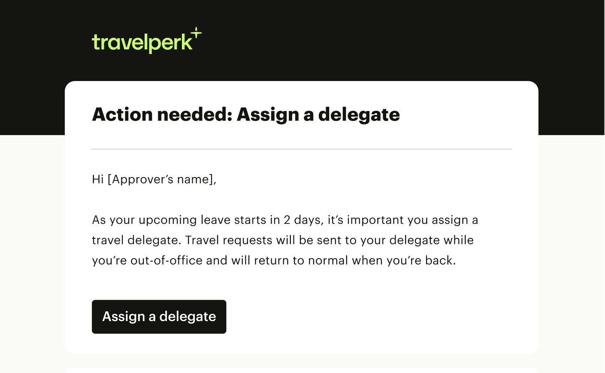
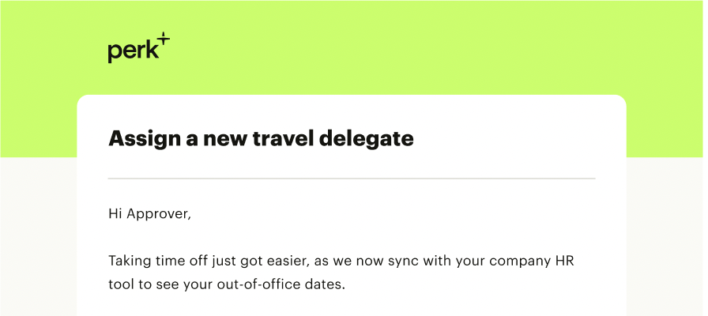
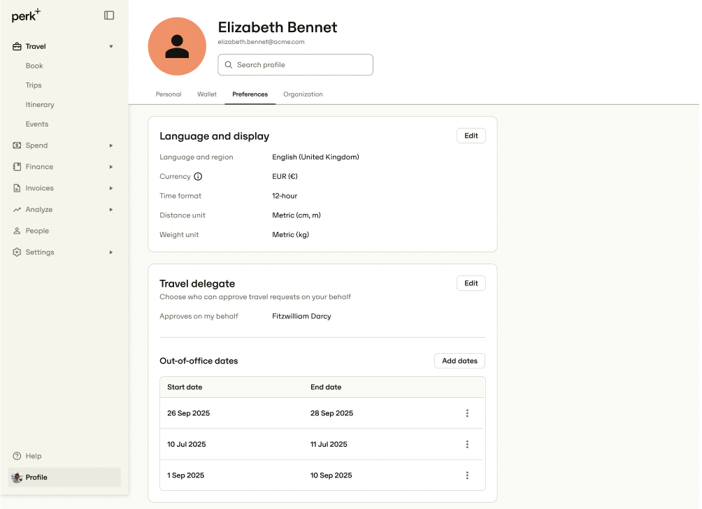

Understanding the problem
Along with the designer on the team, we took these steps to dive in and uncover the user problem:
- Mapped Jobs To Be Done for relevant archetypes (in this case the travel approval managers) across a typical happy user journey.
- Audited the successes and room for improvement in our current product.
- Interviewed existing users and mapped their frictions and needs.
- Conducted competitor benchmarking and industry terminology reviews. For content design specifically, I audited our experience and compared our terminology with competitors’ to find likely comprehension pitfalls.
Through customer feedback loops, data analysis and this discovery process, we found that our users (managers who approve travel requests) were often missing requests because they were — lo and behold — too busy. A request notification would go unnoticed, and the flight or hotel would expire.
After much ideation, we decided to make it a requirement for users to assign a back-up approver: a peer in their company who could take on responsibilities if they were unavailable.


Design
Our primary goal was for users to be able to add a back-up approver. Our secondary goal was to let users add upcoming out-of-office dates, so we could trigger communications ahead of time.
Our design process began with mapping event diagrams, on which we could design solutions. We agreed on a simple, scalable flow, triggered by email to all users and linking to the settings area of the desktop site. (We discovered users typically accessed web over mobile, since they completed these tasks during the working day.)
Validation
We ran user tests, as well as A/B prototype tests, to help refine certain decisions.
Content design decisions
A key terminology decision was what to call this ‘back-up approver’. I included content variations in our A/B test and researched industry standards. We learned that delegate was the most commonly understood term.


Results
How it works
Perk customers can now go to their profile, choose a delegate and have approvals sent to this person. By syncing with the manager’s company HR tool, we automatically divert requests to their delegate whenever we see that the user is out of office.

